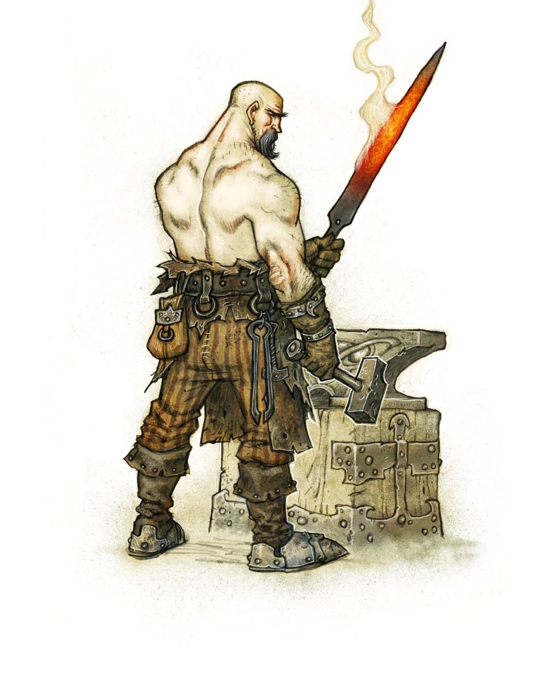
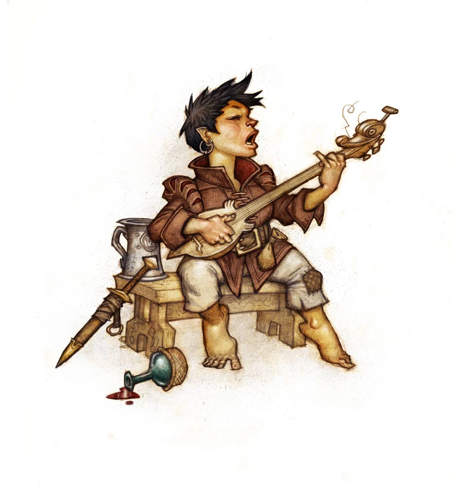
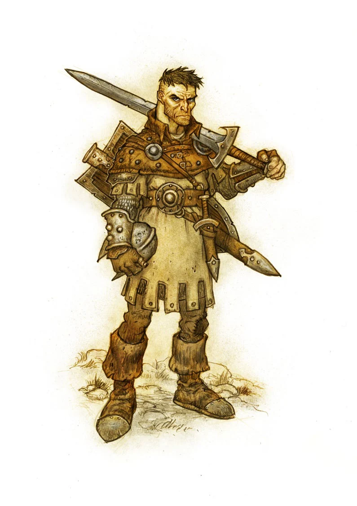
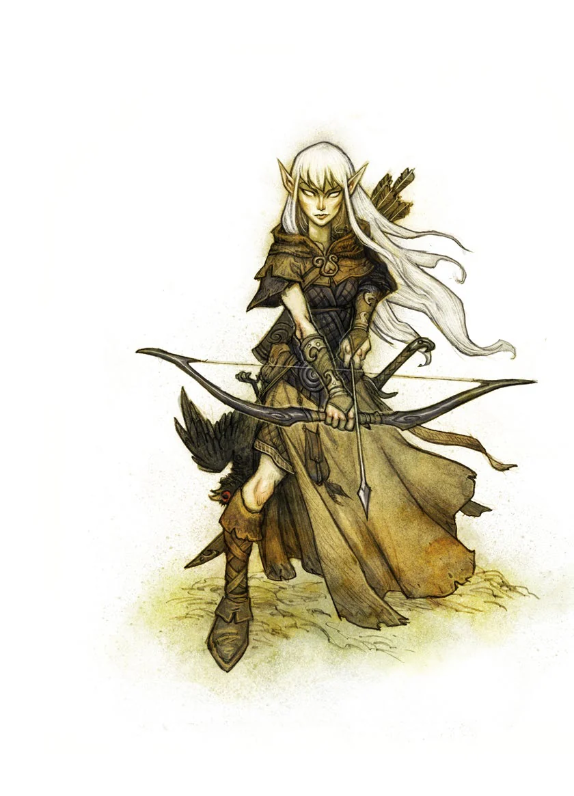
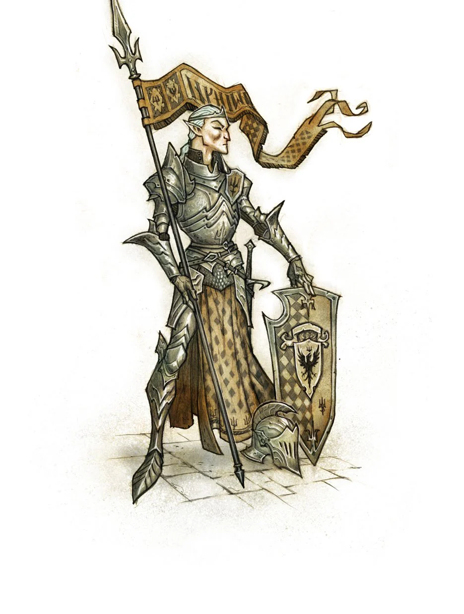
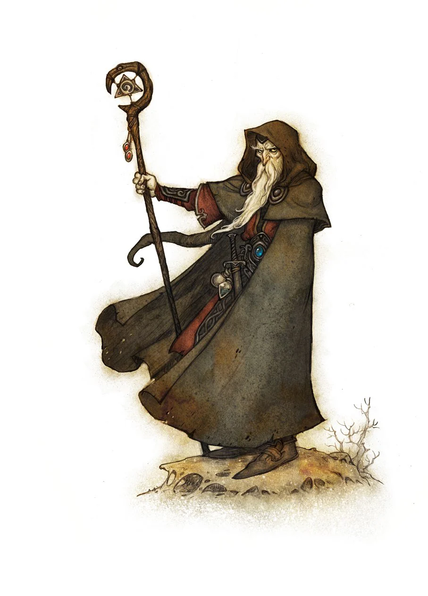
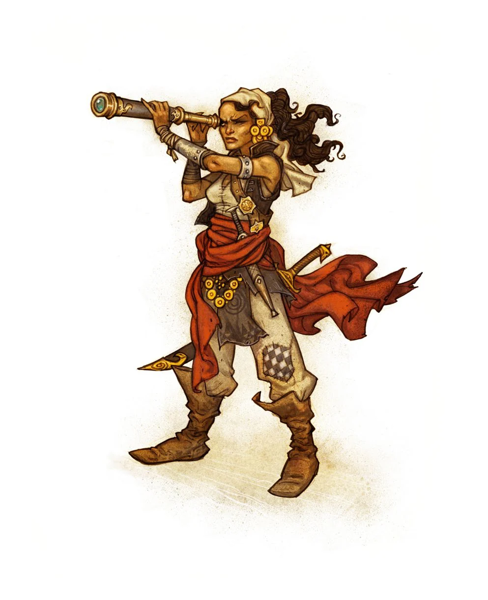
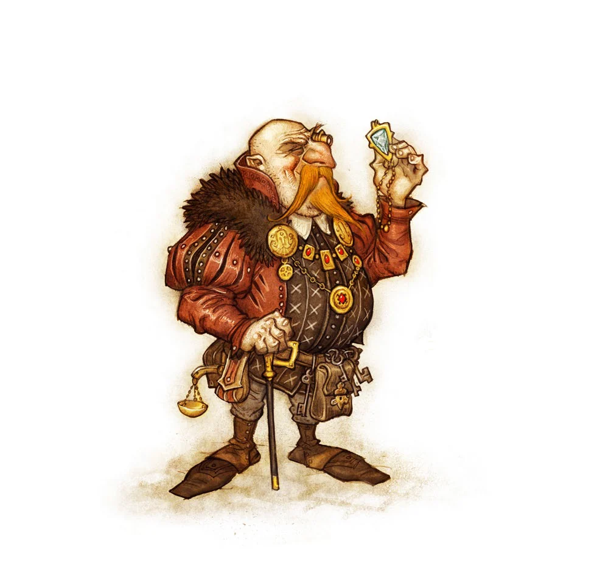
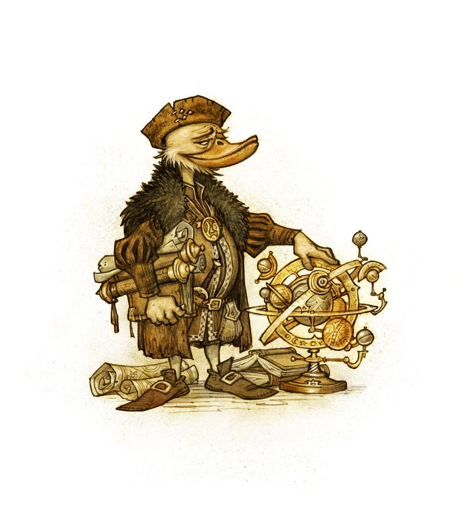
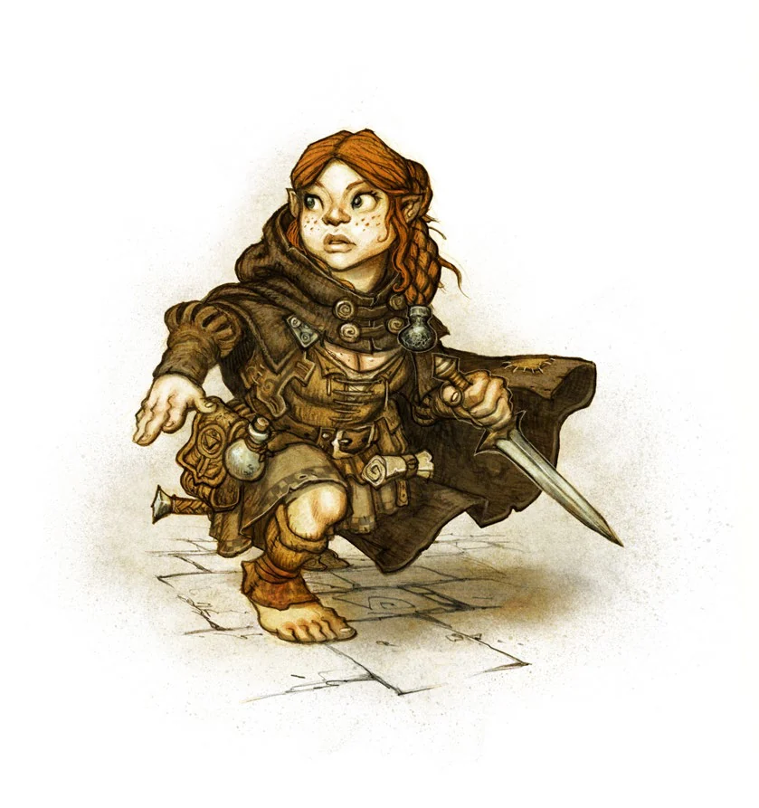

Handwerker
Barde
Krieger
Jäger
Ritter
Magier
Seefahrer
Händler
Gelehrter
DiebHasen in Schlingen fangen, Keiler abstechen und lautlos Hirsche in den Tiefen des Waldes pirschen, den Pfeil auf der Sehne. Jäger leben für die Jagd und die Beute. Ein Tier respektvoll zu töten und alles von ihm zu nutzen – für Nahrung, Kleidung, Werkzeug und Waffen – ist für alle wahren Jäger eine heilige Berufung …
| W6 | Ausrüstung |
|---|---|
| 1–2 | Dolch, Kurzbogen, Köcher, Lederrüstung, Schlafsack, Fackel, Feuerstein & Zunder, Seil (Hanf), Schlinge, W8 Essensrationen, W6 Silber |
| 3–4 | Messer, Langbogen, Köcher, Lederrüstung, Schlafsack, Fackel, Feuerstein & Zunder, Seil (Hanf), Angelrute, W8 Essensrationen, W6 Silber |
| 5–6 | Dolch, Schleuder, Lederrüstung, Schlafsack, Fackel, Feuerstein & Zunder, Seil (Hanf), Schlinge, W8 Essensrationen, W6 Silber |
| W6 | Beiname | W6 | Beiname |
|---|---|---|---|
| 1 | Waldfuchs | 4 | Der Verwitterte |
| 2 | Wolfsbann | 5 | Blutdurst |
| 3 | Pfadfinder | 6 | Schattenbolzen |